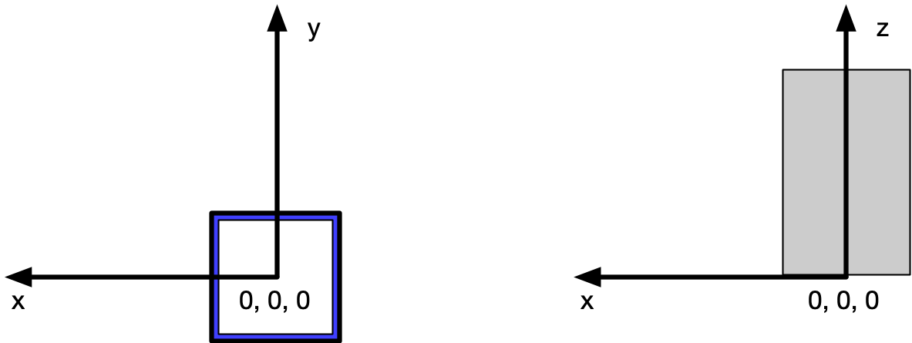

2.3.3.1.34. NXguide¶
Status:
base class, extends NXcomponent
Description:
A neutron optical element to direct the path of the beam. ...
A neutron optical element to direct the path of the beam.
NXguide is used by neutron instruments to describe a guide consists of several mirrors building a shape through which neutrons can be guided or directed. The simplest such form is box shaped although elliptical guides are gaining in popularity. The individual parts of a guide usually have common characteristics but there are cases where they are different. For example, a neutron guide might consist of 2 or 4 coated walls or a supermirror bender with multiple, coated vanes.
To describe polarizing supermirrors such as used in neutron reflection, it may be necessary to revise this definition of NXguide to include NXpolarizer and/or NXmirror.
When even greater complexity exists in the definition of what constitutes a guide, it has been suggested that NXguide be redefined as a NXcollection of NXmirror each having their own NXgeometry describing their location(s).
For the more general case when describing mirrors, consider using NXmirror.
NOTE: The NeXus International Advisory Committee welcomes comments for revision and improvement of this definition of NXguide.
Symbols:
nsurf: number of reflecting surfaces
nwl: number of wavelengths
- Groups cited:
Structure:
description: (optional) NX_CHAR ⤆
A description of this particular instance of
NXguide.incident_angle: (optional) NX_FLOAT {units=NX_ANGLE}
TODO: documentation needed
bend_angle_x: (optional) NX_FLOAT {units=NX_ANGLE}
TODO: documentation needed
bend_angle_y: (optional) NX_FLOAT {units=NX_ANGLE}
TODO: documentation needed
interior_atmosphere: (optional) NX_CHAR
Any of these values:
vacuum|helium|argonexternal_material: (optional) NX_CHAR
external material outside substrate
m_value: (optional) NX_FLOAT (Rank: 1, Dimensions: [nsurf])
The ``m`` value for a supermirror, which defines the supermirror ...
The
mvalue for a supermirror, which defines the supermirror regime in multiples of the critical angle of Nickel.substrate_material: (optional) NX_FLOAT (Rank: 1, Dimensions: [nsurf])
TODO: documentation needed
substrate_thickness: (optional) NX_FLOAT (Rank: 1, Dimensions: [nsurf]) {units=NX_LENGTH}
TODO: documentation needed
coating_material: (optional) NX_FLOAT (Rank: 1, Dimensions: [nsurf])
TODO: documentation needed
substrate_roughness: (optional) NX_FLOAT (Rank: 1, Dimensions: [nsurf]) {units=NX_LENGTH}
TODO: documentation needed
coating_roughness: (optional) NX_FLOAT (Rank: 1, Dimensions: [nsurf]) {units=NX_LENGTH}
TODO: documentation needed
number_sections: (optional) NX_INT {units=NX_UNITLESS}
number of substrate sections (also called ``nsurf`` as an ...
number of substrate sections (also called
nsurfas an index in theNXguidespecification)depends_on: (optional) NX_CHAR ⤆
The entry opening of the guide lies on the reference plane. The center of the ...
The entry opening of the guide lies on the reference plane. The center of the opening on that plane is the reference point on the x and y axis. The reference plane is orthogonal to the z axis and is the reference point along the z axis. Given no bend in the guide, it is parallel with z axis and extends in the positive direction of the z axis.
GEOMETRY: (optional) NXgeometry
DEPRECATED: Use the field depends_on and NXtransformations to position the guid and NXoff_geometry to describe its shape instead
TODO: Explain what this NXgeometry group means. What is intended here?
reflectivity: (optional) NXdata ⤆
Reflectivity as function of reflecting surface and wavelength
Obligatory value:
dataObligatory value:
surface wavelength@surface_indices: (optional) NX_CHAR
Obligatory value:
0@wavelength_indices: (optional) NX_CHAR
Obligatory value:
1data: (optional) NX_NUMBER (Rank: 2, Dimensions: [nsurf, nwl]) ⤆
reflectivity of each surface as a function of wavelength
surface: (optional) NX_NUMBER (Rank: 1, Dimensions: [nsurf]) {units=NX_ANY}
List of surfaces. Probably best to use index ...
List of surfaces. Probably best to use index numbers but the specification is very loose.
wavelength: (optional) NX_NUMBER (Rank: 1, Dimensions: [nwl]) {units=NX_WAVELENGTH} ⤆
wavelengths at which reflectivity was measured
OFF_GEOMETRY: (optional) NXoff_geometry
This group describes the shape of the beam line component
Hypertext Anchors¶
List of hypertext anchors for all groups, fields, attributes, and links defined in this class.

{kind=link}